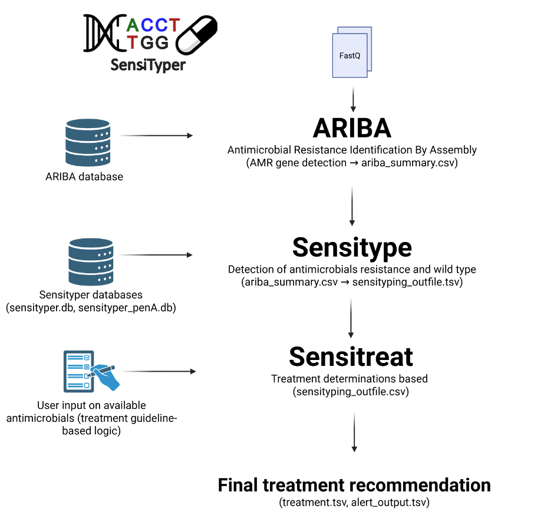

SensiTyper - Genomic Antimicrobial Susceptibility Prediction and Treatment Recommendation for Neisseria gonorrhoeae¶


Full documentation and vignettes: https://leosanbu.github.io/sensityper/
Overview¶
SensiTyper is a genomic antimicrobial susceptibility typing pipeline for Neisseria gonorrhoeae. It predicts antibiotic resistance profiles from whole-genome sequencing data and provides evidence-based treatment recommendations.
Key Features¶
- Genomic resistance profiling - Identifies resistance-conferring mutations in 8 antibiotics
- Treatment recommendations - Assigns regimens based on current clinical guidelines
- Interactive HTML reports - Sortable, searchable tables for easy investigation of results
- XDR detection - Flags extensively drug-resistant (XDR) isolates for clinical review
- Modular workflow - Run complete pipeline or individual steps
Supported Antibiotics¶
- Ceftriaxone - First-line injectable cephalosporin
- Azithromycin - First-line macrolide (dual therapy)
- Ciprofloxacin - Fluoroquinolone (restricted use)
- Spectinomycin - Alternative injectable (limited pharyngeal efficacy)
- Penicillin - Historical β-lactam
- Tetracycline - Historical broad-spectrum
- Zoliflodacin - Oral spiropyrimidinetrione
- Gepotidacin - Oral triazaacenaphthylene
Pipeline Overview¶
SensiTyper reads the summary output obtained from ARIBA containing key determinants of antimicrobial resistance, identifies which antibiotics each strain is susceptible to and makes a treatment recommendation. This can be done by running different modules in SensiTyper:
| Module | Aim |
|---|---|
ariba |
Run ARIBA as a wrapper script |
sensitype |
Identify antibiotics each strain is susceptible to |
sensitreat |
Perform a treatment recommendation |
pipeline |
Chain different modules, e.g. ariba,sensitype,sensitreat, sensitype,sensitreat, etc. Note that the order must be ariba → sensitype → sensitreat, and sensitreat needs the output of sensitype to run |
Workflow:¶

Resistance Determinants¶
The table below lists the genetic markers evaluated by the prediction logic for each antibiotic.
| Antibiotic | Locus | Wild-type position | Known AMR determinant |
|---|---|---|---|
| Ceftriaxone | PenA | A311 | Any |
| V316 | Any | ||
| A501 | A501P | ||
| Azithromycin | 23S rDNA | A2059 | 2059A>G |
| C2611 | 2611C>T | ||
| MtrD | - | Semi- and mosaic structure | |
| MtrC | - | GC dinucleotide deletion in repeat | |
| Ciprofloxacin | GyrA | S91 | S91F/T/Y/I |
| D95 | D95G/N | ||
| ParC | D86 | D86N | |
| S87 | S87A/I/N/R/W | ||
| E91 | E91K | ||
| Penicillin | blaTEM | - | Presence in pBla plasmid |
| PenA | - | insD345 | |
| - | Semi- and mosaic structure | ||
| PonA | L421 | L421P | |
| Tetracycline | tetM | - | Presence in pConjugative plasmid |
| RpsJ | V57 | V57M | |
| Spectinomycin | 16S rDNA | C1192 | 1192C>T |
| RpsE | T24 | T24P | |
| Zoliflodacin | GyrB | D429 | Any |
| K450 | Any | ||
| Gepotidacin | GyrA | A92 | A92T * |
| ParC | D86 | D86N * |
* Combination rule. Gepotidacin is excluded only when both GyrA A92T and ParC D86N are present; either mutation on its own is reported in gepotidacin_NWT but does not exclude the drug. Ceftriaxone follows the same pattern: it is excluded by PenA A501P, or by A311 and V316 together.
Installation¶
Prerequisites¶
- Python 3.6+ — the core pipeline (
ariba,sensitypeandsensitreatmodules) requires no external Python packages - ARIBA (Antimicrobial Resistance Identification By Assembly)
- Sensityping metrics only — the companion evaluation script (
sensityping_metrics.py) additionally requires standard scientific Python:
Setup¶
-
Clone the repository:
-
Verify database files are present in
resources/: -
(Optional) Set environment variables for custom paths:
If not set, the scripts will automatically look in the structure of directories available in the repository.
Usage¶
Module: ariba¶
Run ARIBA in batch mode on FASTQ directories.
python sensityper.py ariba \
--input_dirs /data/run1,/data/run2 \
--output_dir ariba_results \
--db_path /path/to/ariba_db \
--threads 8
Arguments:
--input_dirs- Comma-separated list of directories containing FASTQ files--output_dir- Output directory for ARIBA results--db_path- Path to the ARIBA database, by default inresources/ariba_db--threads- Number of CPU threads (default: 1)
FASTQ Naming: Fastq files must follow one of these patterns:
{sample}_1.fastq.gz/{sample}_2.fastq.gz{sample}_R1.fastq.gz/{sample}_R2.fastq.gz{sample}_R1_001.fastq.gz/{sample}_R2_001.fastq.gz
Module: sensitype¶
Generate resistance profiles from ARIBA output.
python sensityper.py sensitype \
--input_AMRtable ariba_summary.csv \
--sensiscript_outfile sensiscript_results.tsv \
--sensiscript_db resources/sensitype.db \
--sensiscript_pena resources/sensitype.penA.db \
--sensiscript_antibiotics ceftriaxone,azithromycin,ciprofloxacin
Arguments:
--input_AMRtable- ARIBA summary CSV file (required)--sensiscript_outfile- Output TSV file path (default:sensiscript_results.tsv)--sensiscript_db- Path to sensitype main database of genetic AMR determinants (default:resources/sensitype.db)--sensiscript_pena- Path to a database of penA mosaics (default:resources/sensitype.penA.db)--sensiscript_antibiotics- Comma-separated antibiotic list (default: ceftriaxone,azithromycin,ciprofloxacin,tetracycline,penicillin,spectinomycin,zoliflodacin,gepotidacin)
Outputs:
sensiscript_results.tsv- Resistance mechanisms per isolatesensiscript_results.html- Interactive table reporting the genetic determinants of AMR and identified wildtype positions found for each isolate
Module: sensitreat¶
Assign treatment recommendations from resistance profiles.
python sensityper.py sensitreat \
--input_file resistance_profiles.tsv \
--available_antibiotics ceftriaxone,azithromycin,ciprofloxacin,spectinomycin \
--sensitreat_order ceftriaxone+azithromycin,ceftriaxone,azithromycin+spectinomycin,ciprofloxacin,spectinomycin \
--alert_output alert_output.tsv \
--treatment_output treatment_recommendations.tsv \
Arguments:
--input_file- Input resistance TSV from sensitype (required)--available_antibiotics- Comma-separated list of antibiotics available in a specific setting (default: ceftriaxone,azithromycin,ciprofloxacin,tetracycline,penicillin,spectinomycin,zoliflodacin,gepotidacin)--sensitreat_order- Regimen priority order (default: ceftriaxone+azithromycin,ceftriaxone,azithromycin+spectinomycin,ciprofloxacin,spectinomycin,zoliflodacin,gepotidacin). Important: azithromycin monotherapy is supported but NOT in the default order; include 'azithromycin' explicitly to enable it--alert_output- Output TSV for isolates tagged as a clinical alert (defaultalert_output.tsv)--treatment_output- Output treatment TSV path (default:treatment_output.tsv)
Outputs:
alert_output.tsv- Isolates with XDR/no treatment optionstreatment_recommendations.tsv- Recommended treatment regimens per isolatetreatment_recommendations.html- Combined tabbed HTML with:- Alert Banner (if XDR isolates present)
- Tab 1: Treatment Recommendations (direct output from the sensitreat module with recommended treatment regimes)
- Tab 2: Resistance Profile (output from the sensitype module)
Module: pipeline¶
Chain multiple modules together in a single command.
python sensityper.py pipeline \
--modules sensitype,sensitreat \
--other_arguments '--input_AMRtable ariba_summary.csv --sensiscript_outfile sensiscript_results.tsv'
Arguments:
--modules: Comma-separated module names (required) (options:ariba,sensitype,sensitreat)--other_arguments- All module-specific arguments within quotes
Module: rename¶
Standardize FASTQ file naming across directories.
Arguments:
--directories- Comma-separated directory list--pre- Preview mode (dry-run, no actual renaming)
Complete Pipeline (FASTQ → Treatment Recommendations)¶
python sensityper.py pipeline \
--modules ariba,sensitype,sensitreat \
--other_arguments '--input_dirs /data/fastqs \
--output_dir ariba_outputdir \
--sensiscript_outfile sensiscript_results.tsv \
--treatment_output treatment_output.tsv \
--threads 8'
Outputs:
ariba_output/- Folder with ARIBA results for each sampleariba_summary.csv- ARIBA summary tablesensiscript_results.tsv- Resistance and wildtype determinants detected per isolate (direct output from thesensitypemodule)alert_output.tsv- XDR/untreatable isolates (direct output from thesensitreatmodule)treatment_output.tsv- Treatment regimens (direct output from thesensitreatmodule)treatment_output.html- Interactive combined HTML report (direct output from thesensitreatmodule)
Sensityping metrics — Evaluation of predictions against phenotypic outcomes¶
Sensityping metrics is a companion command-line script for evaluating the performance of genomic AMR predictions against phenotypic (gold-standard) treatment outcomes.
It complements the SensiTyper pipeline by providing rigorous, reproducible performance metrics with confidence intervals, sample size diagnostics, and interactive radar visualisations.
Two evaluation modes¶
| Mode | Question answered |
|---|---|
predicted_vs_treatment |
How accurate is each per-antibiotic prediction? |
first_line_vs_treatment |
How well does the treatment cascade perform in practice? |
Quick example¶
# Model-centric evaluation (per antibiotic)
python sensityping_metrics.py \
-i sensiscript_with_phenotypes.tab \
-o metrics_predicted.tab \
-d metrics_predicted_dir \
--analysis_type predicted_vs_treatment \
--ci_flag --ci_method hybrid --ci_level 0.95 \
--n_boot 2000 --seed 1 \
--ssd_flag --ssd_width 0.05 --ssd_mode observed \
--radar_flag --radar_metrics PPV,sensitivity,specificity,coverage_fraction
# Clinical cascade evaluation (treatment workflow)
python sensityping_metrics.py \
-i sensiscript_with_phenotypes.tab \
-o metrics_firstline.tab \
-d metrics_firstline_dir \
--analysis_type first_line_vs_treatment \
--order 'CRO+AZM,CRO,AZM,AZM+SPC,SPC,ZOL' \
--id_extraction CRO+AZM,CRO,AZM,AZM+SPC,SPC,ZOL \
--ci_flag --ci_method hybrid --ci_level 0.95 \
--n_boot 2000 --seed 1 \
--ssd_flag --ssd_width 0.05 --ssd_mode observed \
--radar_flag --radar_metrics PPV,one_minus_FDR,coverage_fraction
See the Sensityping metrics vignette for a full step-by-step tutorial including argument descriptions, expected outputs, and metric interpretation.
Output Files¶
Resistance Profile TSV (sensiscript_results.tsv)¶
Tab-separated file with columns:
isolate- Sample identifiertreatment recommendation- Comma-separated list of suitable antibiotics{antibiotic}_NWT- Non-wild-type (resistance) markers{antibiotic}_WT- Wild-type (susceptible) markers
Example:
| isolate | treatment recommendation | ceftriaxone_NWT | ceftriaxone_WT | azithromycin_NWT | azithromycin_WT | ciprofloxacin_NWT | ciprofloxacin_WT | tetracycline_NWT | tetracycline_WT | penicillin_NWT | penicillin_WT | spectinomycin_NWT | spectinomycin_WT | zoliflodacin_NWT | zoliflodacin_WT | gepotidacin_NWT | gepotidacin_WT |
|---|---|---|---|---|---|---|---|---|---|---|---|---|---|---|---|---|---|
| WHO_A | ceftriaxone, azithromycin, ciprofloxacin, tetracycline, penicillin, zoliflodacin, gepotidacin |
penA.A311_WT penA.A501_WT penA.V316_WT |
23S.A2059_WT 23S.C2611_WT mtrC.WT mtrD.WT |
gyrA.D95_WT gyrA.S91_WT parC.D86_WT parC.E91_WT parC.S87_WT |
rpsJ.V57_WT tetM.not_present |
blaTEM.not_present penA.insD345_WT ponA.L421_WT |
rpsE.T24P | 16S.C1184_WT | gyrB.D429_WT gyrB.K450_WT |
gyrA.A92_WT parC.D86_WT |
|||||||
| WHO_Q | spectinomycin, zoliflodacin, gepotidacin |
penA.60.001 penA.A311V penA.V316T |
penA.A501_WT | 23S.A2059G[99.9%] | 23S.C2611_WT mtrC.WT mtrD.WT |
gyrA.D95_A gyrA.S91F parC.S87R |
parC.D86_WT parC.E91_WT |
rpsJ.V57M tetM |
penA.60.001 ponA.L421P |
blaTEM.not_present penA.insD345_WT |
16S.C1184_WT rpsE.T24_WT |
gyrB.D429_WT gyrB.K450_WT |
gyrA.A92_WT parC.D86_WT |
||||
| WHO_Z | azithromycin, spectinomycin, zoliflodacin, gepotidacin |
penA.64.001 penA.A311V penA.V316T |
penA.A501_WT | 23S.A2059_WT 23S.C2611_WT mtrC.WT mtrD.WT |
gyrA.D95N gyrA.S91F parC.S87R |
parC.D86_WT parC.E91_WT |
rpsJ.V57M | tetM.not_present | penA.64.001 ponA.L421P |
blaTEM.not_present penA.insD345_WT |
16S.C1184_WT rpsE.T24_WT |
gyrB.D429_WT gyrB.K450_WT |
gyrA.A92_WT parC.D86_WT |
Treatment Output TSV (treatment_output.tsv)¶
Tab-separated file with columns:
isolate- Sample identifierPredicted Profile- Susceptibility summary, one entry per antibiotic evaluated bysensitype(e.g., "ceftriaxone=YES, azithromycin=YES, ...")Recommended Treatment- Full regimen with dosing (e.g., "Ceftriaxone 1 g IM + Azithromycin 2 g orally")Comment- Clinical guidance and warnings
Example:
| isolate | recommended_1 | recommended_2 | Predicted Profile | Recommended Treatment | Comment | ceftriaxone+azithromycin | ceftriaxone | azithromycin | azithromycin+spectinomycin | ciprofloxacin | spectinomycin | zoliflodacin | gepotidacin | chosen_regimen |
|---|---|---|---|---|---|---|---|---|---|---|---|---|---|---|
| WHO_A | ceftriaxone | azithromycin | ceftriaxone=YES, azithromycin=YES, ciprofloxacin=YES, tetracycline=YES, penicillin=YES, spectinomycin=NO, zoliflodacin=YES, gepotidacin=YES |
Ceftriaxone 1 g IM + Azithromycin 2 g orally | Acceptable combination therapy | YES | NO | NO | NO | NO | NO | NO | NO | ceftriaxone+azithromycin |
| WHO_Q | spectinomycin | zoliflodacin | ceftriaxone=NO, azithromycin=NO, ciprofloxacin=NO, tetracycline=NO, penicillin=NO, spectinomycin=YES, zoliflodacin=YES, gepotidacin=YES |
Spectinomycin 2 g IM | Lower cure rates in oropharyngeal infection; avoid as monotherapy for oropharyngeal infection when possible | NO | NO | NO | NO | NO | YES | NO | NO | spectinomycin |
| WHO_Z | azithromycin | spectinomycin | ceftriaxone=NO, azithromycin=YES, ciprofloxacin=NO, tetracycline=NO, penicillin=NO, spectinomycin=YES, zoliflodacin=YES, gepotidacin=YES |
Spectinomycin 2 g IM + Azithromycin 2 g orally | Alternative regimen | NO | NO | NO | YES | NO | NO | NO | NO | azithromycin+spectinomycin |
Alert Output TSV¶
Lists isolates requiring clinical review:
- XDR - Resistant to ceftriaxone, azithromycin, AND ciprofloxacin
- None - No suitable treatment options available
HTML Report¶
When running the sensiscript alone or sensityper sensitype module, results will also be formatted into an HTML file showing the identified resistance and wildtype determinants for each antibiotic under study.
When running sensityper sensitreat or the pipeline mode including sensitreat, a combined HTML report will be produced showing the results of both sensitype and sensitreat as two tabs:
- Report header - Isolate count and the list of antibiotics available for treatment in this setting, as given to
--available_antibiotics - Alert Banner - Clinical warnings
- Tab 1: Treatment Recommendations (direct output from the
sensitreatmodule with recommended treatment regimes) - Tab 2: Resistance Profile (outut from the
sensitypemodule with detailed resistance and wildtype determinants
Documentation¶
- N. gonorrhoeae WHO reference strains vignette - Step-by-step tutorial
- Complete workflow example using N. gonorrhoeae WHO reference strains
- Result interpretation
-
Common issues and solutions
-
Sensityping metrics vignette - Evaluation framework tutorial
- Model-centric and clinical workflow evaluation
- Confidence intervals, sample size diagnostics, and radar plots
Clinical Interpretation¶
Treatment Recommendation Categories¶
Guideline-recommended monotherapy:
- Ceftriaxone 1 g IM
- Used when azithromycin resistance detected
Acceptable combination therapy:
- Ceftriaxone 1 g IM + Azithromycin 2 g orally
- Preferred dual therapy for uncomplicated gonorrhea
Alternative regimen:
- Spectinomycin 2 g IM + Azithromycin 2 g orally
- Used when ceftriaxone resistance detected
- Note: Lower cure rates for pharyngeal infections
Newer oral options:
- Zoliflodacin 3 g orally (single dose)
- Gepotidacin 3 g orally twice (2 doses, 10-12 h apart)
- US FDA-approved for uncomplicated urogenital infection; lower cure rates in oropharyngeal infection
Important Limitations¶
- Genotypic predictions may differ from phenotypic resistance - Confirmatory culture and antimicrobial susceptibility testing (AST) recommended
- Spectinomycin - Avoid for pharyngeal infections when possible
- Novel mutations - Flagged with
(WARN:novel_mutation), require expert review - Clinical context - Consider patient history, allergies, infection site, and local resistance patterns
Troubleshooting¶
ARIBA Failures¶
Symptom: ARIBA fails for some samples
Solutions:
- Check FASTQ file naming (use rename module to standardize)
- Increase retry attempts in ariba_batch.py (default: 3)
- Run ARIBA with only one thread
Treatment Shows "None"¶
Symptom: Treatment recommendation is "None" for an isolate
Cause: No suitable treatment available from --available_antibiotics list
Solutions:
- Check alert_output.tsv for XDR status
- Review resistance profile TSV to confirm all antibiotics are resistant
- Consider expanding --available_antibiotics if clinically appropriate
HTML Not Generated¶
Symptom: TSV files created but no HTML output
Solutions:
- Check if --suppress-html flag was used (pipeline mode suppresses standalone HTML)
- Verify TSV file exists and has valid content (not empty)
- Check console for Python exceptions during HTML generation
- Ensure output directory is writable
Citation¶
If you use SensiTyper in your research, please cite:
Golparian D, Sánchez-Busó L and Unemo M. Genomic Surveillance Meets Clinical Practice: Rule-Based Individualised Treatment Prediction for Gonorrhoea using SensiTyper (submitted).
Contact¶
For questions, bug reports, or feature requests: - Open an issue on GitHub - Contact leonor.sanchez@fisabio.es or daniel.golparian@regionorebrolan.se
Disclaimer: This tool is for research and surveillance purposes. Clinical treatment decisions should be made by qualified healthcare professionals considering patient-specific factors, local resistance patterns, and current treatment guidelines. Confirmatory phenotypic testing is recommended when possible.